Auxiliar 3: Ley de Gauss — Parte 2
Aplicaciones avanzadas de la Ley de Gauss: esferas con cavidades, densidades de carga variables y configuraciones con múltiples regiones.
Temas que cubre
- Esferas macizas con cavidades internas
- Cascarones esféricos concéntricos con distintas cargas
- Cilindros infinitos con densidades de carga que varían con $r$
- Planos infinitos cargados (conductor y no conductor)
- Superposición para construir geometrías complejas
Conceptos clave
Esfera con cavidad
Se trata como superposición de una esfera maciza menos una esfera maciza en la región de la cavidad. El campo en la cavidad de una distribución uniforme es constante.
Densidad variable $\rho(r)$
Si $\rho$ depende de $r$, la carga encerrada se obtiene integrando: $Q_{\text{enc}} = \int_0^r \rho(r')\,4\pi r'^2\,dr'$. Gauss sigue aplicando si hay simetría esférica.
Plano infinito conductor
El campo sale perpendicular a ambas caras. Para un plano conductor con densidad $\sigma$, el campo a cada lado es $E = \sigma/(2\varepsilon_0)$, resultando en $\sigma/\varepsilon_0$ total.
Múltiples regiones
En problemas con varias capas, se aplica Gauss por separado en cada región, acumulando la carga encerrada conforme crece el radio de la superficie gaussiana.
Fórmulas fundamentales

Qué hay que entender
- Define claramente cada región y su límite antes de calcular.
- Para cada región, escoge una superficie gaussiana concéntrica e integra solo la carga interior.
- El campo debe ser continuo en regiones sin carga superficial.
- En interfaces con $\sigma \neq 0$, el campo tiene una discontinuidad de $\sigma/\varepsilon_0$.
- Verifica que tu resultado $\mathbf{E}(r)$ sea continuo donde no hay carga superficial.